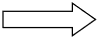
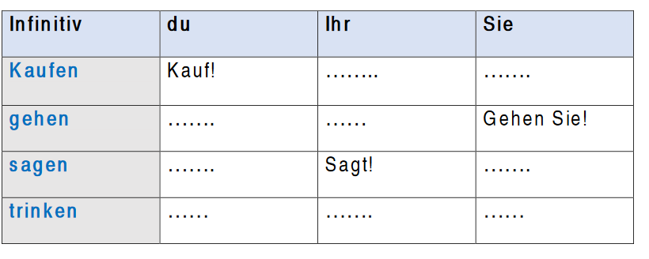

The imperative – Der Imperativ
What is the imperative?
We use imperative to express a request, an instruction or a command in direct speech (when you talk to somebody directly).
Ex:
Lesen Sie die Sätze! (Read the sentences!)
Öffne die Tür! (Open the door!)
How to form the imperative?
The verb comes in first position as in English. There are 3 different forms of imperative depending on whether it is Singular or Plural. Imperative is used when you speak directly to someone, so we use the second person.
- ‘’du ’’ (2. Person Singular)
- “ihr” (2. Person plural)
- “Sie” Höflichkeitsform (Singular und Plural)
 Use “du” form for singular as the verb conjugated in present, then drop
“du” and the ‘-st’ ending.
Use “du” form for singular as the verb conjugated in present, then drop
“du” and the ‘-st’ ending.
Beispiel (example):
du machst  Mach!
Mach die Hausaufgabe! (Make the homework!)
du kommst Komm!
Komm hier ! (Come here!)
- Use “ihr” form for plural as the verb conjugated in present, then remove
only the word “ihr” and keep the ‘-t’ ending.
Beispiel (example):
Ihr macht Macht!
Macht die Hausaufgabe! (Make the homework!)
Ihr kommt Kommt!
Kommt hier! (Come here!)
- Use ‘Sie’ form (for both singular or plural formal) as the verb conjugated
in present. Swap the positions only
Beisbiel (example):
Sie machen Machen Sie!
Machen Sie die Hausaufgabe! (make the homework!)
Sie Kommen Kommen Sie!
Kommen Sie hier! (Come here!)
Übung (exercise): Bilde den Imperativ! (form the imperative!)
